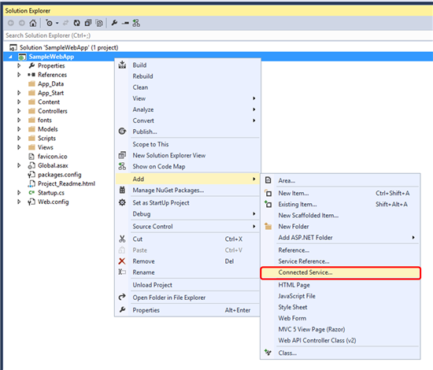
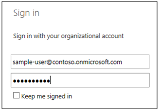
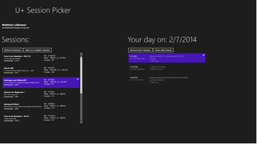

This solution is a Windows app that reads an Office365 SharePoint list of Sessions for an event and allows users to Add, Update, and Delete session in their Exchange Calendar.
Last modified: March 13, 2014
In this article
Description
Prerequisites
Creating the Session List in Office 365 SharePoint online
Key components of the sample
Configure the sample
Register app to consume Office 365 APIs via Visual Studio
Build the sample
Run and test the sample
Change log
Related content
| Important |
|---|
|
Prerelease content The features and APIs documented in this article are in preview and are subject to change. Do not use them in production.Your feedback about these features and APIs is important. Let us know what you think. Have questions? Connect with us on Stack Tag your questions with [ms-office]. |
Description
The app describes how an application can authenticate to and use various Office 365 APIs to build integrated experience for the user working with Office 365.
Prerequisites
This sample requires the following:
-
Visual Studio 2013
-
Microsoft account
-
Session List in the Office 365 SharePoint Online.
-
Optional : Registered to Windows app development.
Creating the Session List in Office 365 SharePoint online
In Office 365SharePoint Online select Site Settings and choose a Custom List with following fields:
|
Field name |
Field Type |
Required |
|---|---|---|
|
Title |
Single line of text |
Yes |
|
Room |
Single line of text |
Yes |
|
Start |
Date and Time |
Yes |
|
End |
Date and Time |
Yes |
|
Code |
Single line of text |
Yes |
|
Description |
Multiple lines of text |
Yes |
Add some data to the session list.
| Note |
|---|
|
Make sure that the field names are exactly like in the table above. In case field names are different in the OData response from SharePoint the application will not work. |
Key components of the sample
The sample app contains the following:
-
MainPage.xaml.cs a code-behind file of the main page containing the logic behind all the steps such as First Sign-In, Get Session List from SharePoint, Get/Add/Update/Delete Events from Exchange, and Get User Profile Information from Windows Azure Active Directory.
-
SessionList.cs - Retrieves the sessions from the Office 365 SharePoint list.
-
UserProfileInfo.cs- Retrieves the user profile from Windows Azure Active Directory.
-
CalendarEvents.cs- Retrieves the calendar events from the Office 365 Exchange Calendar performs Add/Update/Delete operations on the Office 365 Exchange Calendar.
-
Mail.cs- contains the logic to sends e-mail using Office 365 Exchange.
Configure the sample
Follow these steps to configure the sample.
-
Open the SessionPickerDemo.sln file using Visual Studio 2013.
-
In AppSettings.cs, update SharePointSessionListUri to point to the session list created in the earlier step.
-
Update SharePointHostResourceId to reflect the hostname of your Office 365 SharePoint site that contains the list.
-
Register the app to consume Office 365 APIs.
Register app to consume Office 365 APIs via Visual Studio
You can do this via the Office 365 API Tools for Visual Studio (which will automate the registration process). Download Office 365 API tools from the Visual Studio Gallery. Close Visual Studio 2013, then choose the .VSIX file and begin setup. A few moments later, the extension will be installed. Now, just open Visual Studio, and follow along in the walkthrough below.
-
In the Solution Explorer, choose the project and then choose Add and choose Connected Service as shown in Figure 1.
Figure 1. Add Connected Service
 -
A Services Manager dialog box will appear as shown in Figure 2. Choose Office 365 and Sign in.
Figure 2. Services Manager

-
On the sign-in dialog box, enter the username and password for your Office 365 tenant as shown in Figure 3. We recommend that you use your Office 365 Developer Site. Often, this user name will follow the pattern <your-name>@<tenant-name>.onmicrosoft.com. If you do not have a developer site, you can get a free Developer Site as part of your MSDN Benefits or sign up for a free trial. Be aware that the user must be an admin user—but for tenants created as part of an off365devsitelong, this is likely to be the case already.
Figure 3. Windows Azure Active Directory
 -
After you're signed in, you will see a list of all the services. Initially, no permissions will be selected —as the app is not registered to consume any services yet.
-
Choose the following permissions for this sample -
-
Windows Azure Active Directory Graph permissions - User Profile permission
-
Exchange Server permissions - Contacts, Calendar, and Mail permissions
-
SharePoint permissions - use AllSites, and ONLY "Read items in all site collections" or "Edit or delete items in all site collections" permissions.
-
Build the sample
To build the sample, press CTRL+SHIFT+B.
Run and test the sample
Run the solution and Sign-In with your Organizational Account to Office 365.
Add Sessions to the Office 365 Exchange Calendar of the Organization Account that is signed into the applications by either selecting "Add-to or Update Calendar" or simply dragging sessions from the Session list onto the Calendar event list. Check the Office 365 Exchange Calendar for the added sessions. Check the Office 365 Exchange Calendar for the added sessions.

Change log
Second release: May, 2014.
Original release: March, 2014.